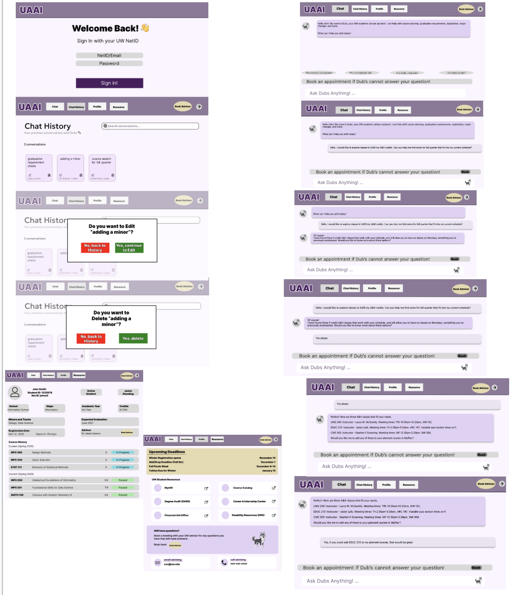
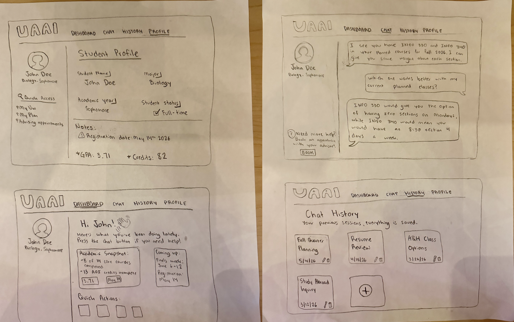
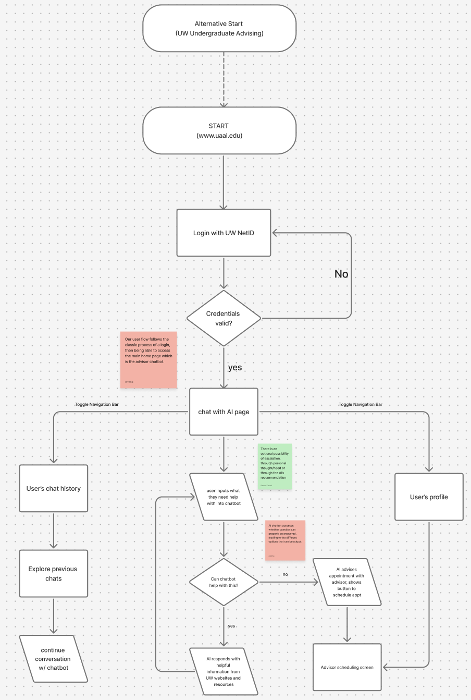
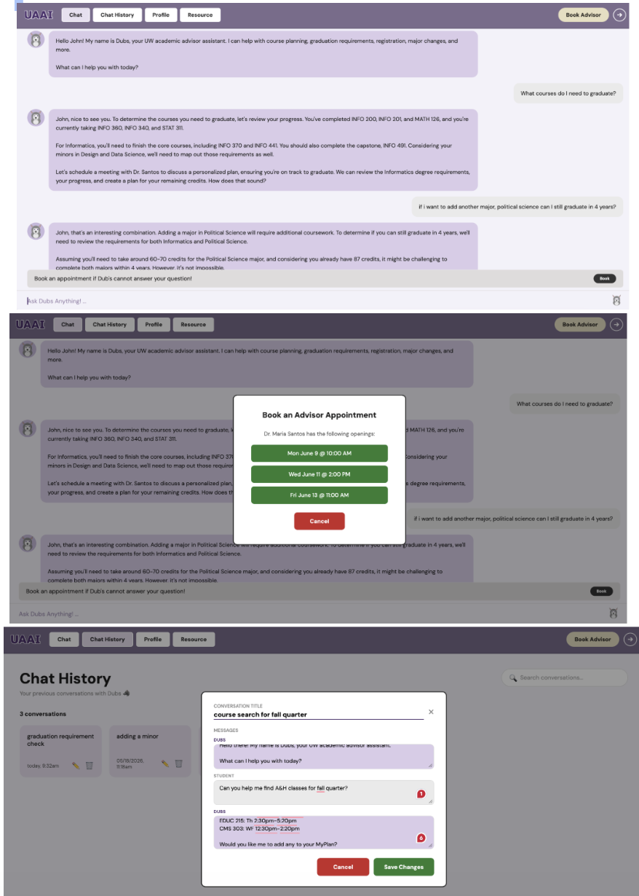
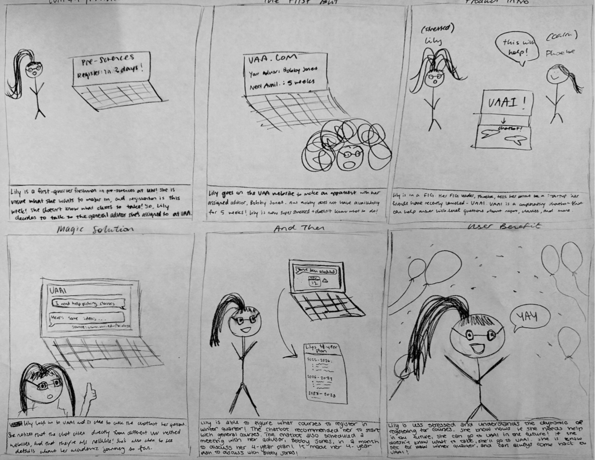

UAAI gives UW undergrads instant, validated answers to advising questions — so students get clarity and advisors get time back.
Academic advising at UW is structurally strained. With over 47,000 undergraduates and a limited advising staff, timely guidance is not guaranteed. Our surveys found nearly half of students struggled to get an appointment — and many stopped trying entirely. Students navigating course planning, major changes, or graduation requirements are left with tools that surface data but offer no interpretation. Stress peaks during the highest-stakes moments: registration windows, declaration deadlines, and graduation audits — exactly when students need guidance most. Existing alternatives don't fill the gap: UW's own platforms are admin-first, EAB Navigate is advisor-facing only, and ChatGPT generates confident but UW-inaccurate answers. Our core research insight: students don't need more information — they need the right information at the right moment.
User Research Highlights
6 of 13 students
struggled to get
an advising meeting.
10 of 13 said they'd
use an AI advisor
for routine questions.
Only 5 of 13 felt their
advisor knew them
personally.
"Even advisors themselves feel the system is broken for routine questions and are open to AI help — but the threshold for trust and accuracy is high."
— UW Academic Advisor Interview
Advisor Interview
"Many questions don't need a full 15-minute meeting — that creates unnecessary friction for both sides. I'd welcome a tool that handles simple lookup questions, as long as advisors aren't removed from the equation."
— UW Undergraduate Academic Advisor
Competitive Landscape
UW MyPlan / DawgPath / MyUW
Surfaces accurate data — but leaves all interpretation to the student. Admin-first by design.
EAB Navigate
Streamlines advisor workflows — but does nothing for students who can't get a meeting.
ChatGPT / General AI
Available 24/7 and conversational — but no UW-specific data and frequently inaccurate.
UAAI fills the gap
Always-on + verified UW data + student memory + escalation to a real advisor.
We evaluated UAAI through two rounds of paper prototype usability testing using a Wizard of Oz approach, followed by a heuristic evaluation of the high-fidelity Figma prototype. Each round used situated task scenarios — realistic situations framing why a student would use the tool — and a think-aloud protocol to surface confusion in real time.
Every design decision in UAAI traces back to a gap our research exposed that students continue to miss deadlines, avoiding questions, and navigating fragmented tools alone because the advising system was built around advisor availability, not student need.
UAAI is a UW-specific AI advising assistant that provides accurate, instant answers to routine academic questions 24/7, while routing complex decisions to a real human advisor. Students log in with their UW NetID, land directly on an AI chat interface, and ask questions in natural language. The AI responds with verified, plain-language answers that cite their sources and remembers each student's academic context with major, year, credits, registration date, so every interaction feels personal rather than generic.
Try the Working Prototype
Open UAAI →




AI Chat (Dubs) - The core feature and first screen after login. Students ask questions in free text or tap suggested starters like "What courses do I need to graduate?" Dubs answers using verified UW data and cites its source on every response, so students know the answer is trustworthy and not a guess.
Escalation & Advisor Booking - A persistent "Book Advisor" button appears on every page. When Dubs can't answer a question, it proactively surfaces real appointment slots from the student's assigned advisor. This closes the loop between AI support and human support without the student ever having to leave the tool or start over.
Student Profile + Chat History - UW NetID login pulls each student's academic data and makes it available across every interaction. Chat History lets students return to and continue past conversations so advice doesn't get lost. Together these features make UAAI feel like a tool that actually knows you with directly addressing the research finding that students with advisors who knew them personally rated their advising experience significantly higher.
"Cutting features didn't seem optimal at the moment, but it forced us to get really clear on what the core experience needed to be."